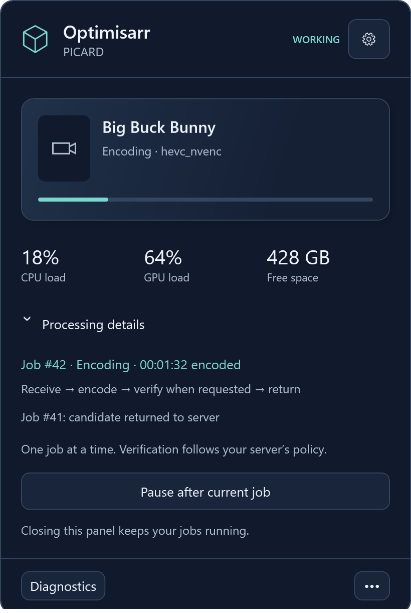
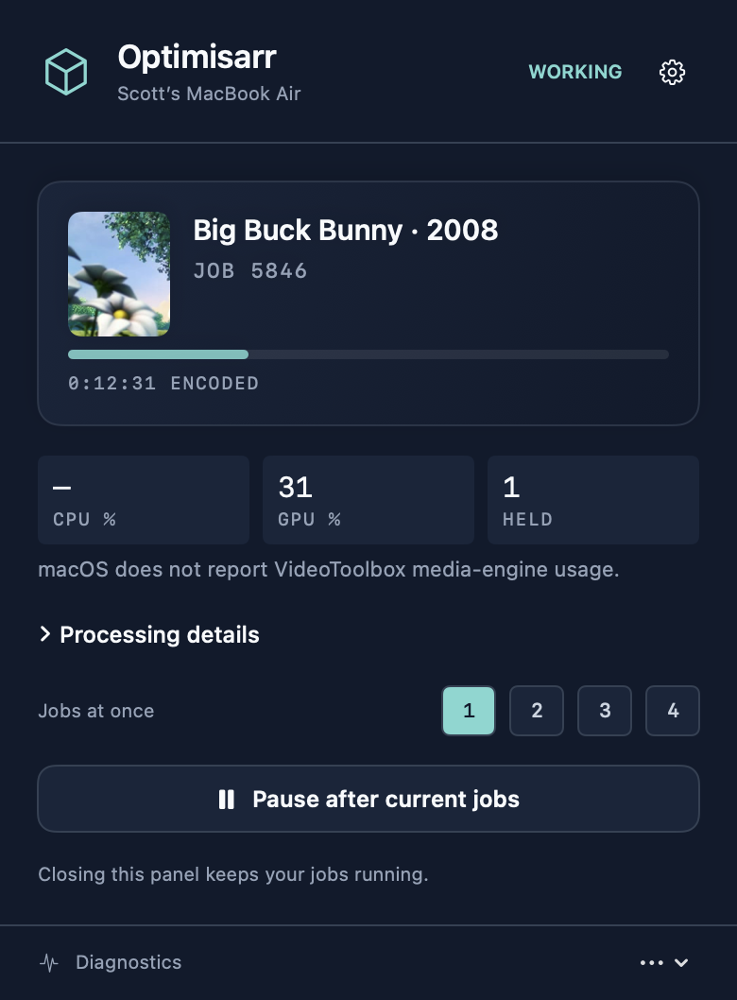

OPTIMISARR SIDECARS · IMPLEMENTED NATIVE VIEWSCompact Monitor, on both desktops.
Windows tray and Mac menu bar. Matching slate cards, hover shadows and teal accents, with each platform’s real controls. These are native renders using sample job data.
Windows tray

CPU, GPU and free working space. The worker runs separately from the tray. Artwork uses a placeholder until the protocol supplies it.
Mac menu bar

Retains frame previews, film strip and job concurrency. Preferences and diagnostics stay within the menu-bar panel.